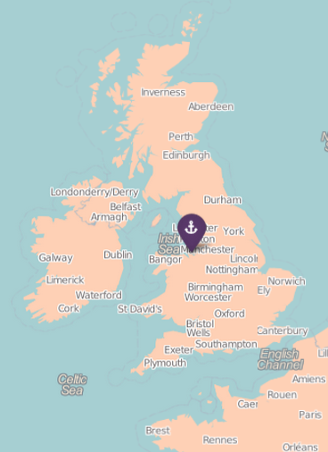

Departures from Liverpool, 1938 - 1940

Passenger list
| Name | On | Type | Destination |
|---|---|---|---|
| WAUGH | Batory | Ship | Fremantle, Western Australia |
| HOGARTH | Batory | Ship | Fremantle, Western Australia |
| ANDERSON | Batory | Ship | Fremantle, Western Australia |
| BRALSFORD | Batory | Ship | Fremantle, Western Australia |
| SANDBACH | Batory | Ship | Fremantle, Western Australia |
Liverpool
Liverpool is a city and metropolitan borough of Merseyside, England, United Kingdom along the eastern side of the Mersey Estuary. It was founded as a borough in 1207 and was granted city status in 1880.
Population: 465,700 (2011)
Area: 43.18 sq miles (111.8 km²)
Founded:: 1207
Related media